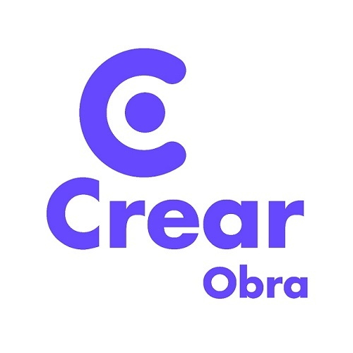

La Empresa
Somos una empresa familiar con amplia trayectoria en la industria de la construccion de viviendas unifamiliares y en la ejecucion de instalaciones electricas, sanitarias, gas y calefaccion. Nos destacamos en el planeamiento y el permanente contacto con nuestros clientes antes y despues de la ejecucion del proyecto. Nos especializamos en:
- Construccion en mamposteria
- Hormigon armado
- Instalaciones
- Proyecto y Direccion
- ¿Que tipo de sistema constructivo se adapta mejor a mi proyecto?
- ¿Como armar mi presupuesto?
- ¿Que aspectos legales debo tener en cuenta antes de comenzar mi proyecto?